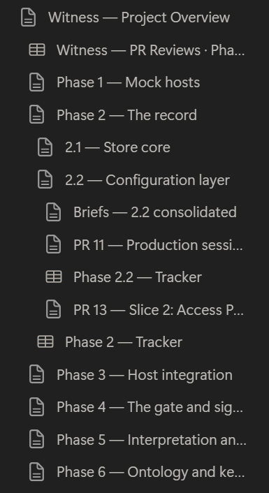

Supply Chain Management and Continuous Improvement, by trade — building practical AI tools for your Supply Chain.
My profession is in software and process design, development, Six Sigma–Lean principles, continuous improvement, and implementation — my trade, and my passion. I learned how to watch a process until the constraint or waste shows itself, build the solution, implement it, and then train my peers. AI has changed how I approach developing software solutions. I design, direct, and build leveraging AI tools, implementing a gated loop I designed to ensure that the solution is go-live ready. From international logistics to client-side software implementation, that is where my projects come from. Everything here, including the front-end UI, is designed and directed by me and built with AI assistance.
Witness — the receiving cross-check on film.Ship Safe — a sample shipment screened end to end.
Atlanta, Georgia — open to logistics, supply-chain, and AI-implementation roles.
Entry 2 · the flagship Ship Safe
Ship Safe is a dangerous-goods screening aid for freight shipments. It screens individual shipment lines against dangerous-goods rules and hands the screener a clear determination on each line — what is clear, what needs a closer look, and what must not move — so a busy screener’s time goes to the freight that actually needs it. Underneath the screens sits a written rules language, designed on principles that are proprietary and not published here.
The AI in Ship Safe only ever advises. A screener can connect it to an AI API to brief them on an unfamiliar shipper or to take a second look at a single line — observations and questions only. The human screener always makes the final call.
In validation, the suite ran 89 screening test cases: 141 of 141 regulated lines correctly flagged, 112 of 112 clean lines left clear, and 37 of 37 traps held. Personal project, built and validated on synthetic test data. Not affiliated with or endorsed by any employer.
The screening desk — every line gets a determination.Line details — the workings behind one line’s call.The checklist — the screener’s pass over a shipment.Screening output, expanded — workings shown, not hidden.
The walkthrough — a sample shipment screened end to end.
Proprietary. A full code description of Ship Safe exists, but its details are proprietary and are withheld — the document it points to is a brief notice marking the project, nothing more. Read the notice.
Witness is an AI layer run by voice and vision — an assistant for the entire warehouse process, from dock appointment to load and ship, built to sit on the WMS a warehouse already runs. Initially developed for the Meta AI Hackathon, I have since started on a true build of the project. Warehouse work is hands-busy and eyes-busy, so the worker runs the building by talking: speak the work, and the record updates itself. No keyboards, no clipboards, no stopping to type.
It runs the whole building — dock doors, zones and bins, inbound and outbound — over three surfaces: the desk keeps the record, the phone captures, the glasses glance. A voice-driven work queue dispatches the shift, and a central agent prepares work before anyone asks: pre-staging what is needed, flagging what is about to jam. Managers see the warnings with their numbers showing — always a proposal, never a decision. And the system learns the building’s own language: its ontology is dynamic, so when a worker uses a word it does not know, it asks — and remembers the answer.
The receiving cross-check on film — the receiver’s spoken scan set against the camera’s, which is where Witness starts.
The screenshots below were demos for the hackathon and no longer reflect the current build.
The glasses view — the load as the wearer sees it, META’s words at the edge of sight.The warehouse map — Walk the Shift: the building live, the first task offered.
At receiving, every shipment gets two independent witnesses. The receiver speaks their scan — hold to talk, describe what you see, in their own words, not squeezed into fixed fields — and a photo scan takes the same load from all four sides. Witness cross-checks the two point by point: agree, flag, or can’t verify. Every disagreement becomes a finished OS&D report — overage, shortage, and damage — captured at handoff instead of reconstructed weeks later. The machine never signs off. A person does.
Witness was my entry in the Meta Global AI Developer Hackathon, built and submitted inside the October 26 – November 4, 2026 build window. It did not end at the deadline: it is one of my two flagship projects, and the work continues — since the deadline it has gained full-flow voice completion, one record shared by desk, phone, and glasses, work assigned as whole jobs by department, and an ontology that learns new features on its own. The road from here: one gated path for every action the AI takes, and adapters that let it sit on top of the WMS a warehouse already runs. We are going to make this thing special.
The files in Witness open the same way: each one begins by saying what it is and what it will not do. Compiled word for word, they make a 62-file walk through the whole system — the ontology and the central agent at the core, then the warehouse surfaces, and the glasses last. Read the code in its own words.
Clear Window is a desktop companion that answers “show me how” by showing. You ask how to do something on your computer, and instead of a list of steps — the kind that goes stale the moment a page changes — it draws on a transparent overlay that covers the whole screen: arrows, targets, drag paths, short notes, like the telestrator lines drawn over a sports replay. The window itself is clear. Only a thin rim admits it is there.
“Now who is this sweet person showing me exactly where to click and type inside this Nintendo?”
Photo: Nenad Stojkovic — CC BY 2.0, via Wikimedia Commons.
The founding rule is absolute: the AI never clicks and never types. Every input stays in the user’s hands — the machine holds the marker, the person holds the mouse. The guide itself can be swapped from the app’s menu: a fast built-in AI mode for ordinary questions, or a second mode where the guidance comes from my own AI agent over a private relay — slower, turn by turn, but it knows my work and my machine. Clear Window began as an idea dictated on a drive on the morning of November 2, 2026; by that afternoon it was a working Windows app, guiding its first real task on my own desktop.
Entry 5 AI Strategies
I am constantly developing AI strategies on how to properly utilize AI. Each strategy gets its own page here as it settles.
The what. Every use of AI does one of three things to the person using it. It can shorten a limb: work your own hands can do, but doing it yourself is slow and costly for you — the AI compresses your effort, and the capability stays yours. It can fill a gap: a capability you don’t have at all — the AI supplies the missing piece so the work becomes possible. Or it can replace: the AI takes the limb over entirely, or worse, the head — the judgment, direction, and final call. The first two are the whole value of the tool. The third is the failure mode.
The why. When AI shortens a limb or fills a gap, you stay the author of the work — your skill stays in use, and the judgment stays yours. Replacing runs the other way — a limb you stop using weakens, and once the head is outsourced, the work is no longer yours; you’re just approving output you couldn’t produce or judge yourself. AI is a support tool — it exists to make the work more efficient. Lean on it too heavily and the bargain reverses: you find yourself going back over what it got wrong and fixing it, and the repair costs you more time than doing the task yourself would have. So the model is a test to run on any AI workflow before adopting it: which of the three is this doing? If it’s replacing — especially the head — redesign it until it isn’t.
How We Build Witness — Waterfall methodology, one PR at a time, five-layer reviews. Nothing merges without my word. This is the org structure the process runs on: the seats, the gates, and the loops.
The Cast
Five seats. I direct and gate: Faye takes the briefs to Claude and brings the reports back, and merges happen only on my explicit word, per PR — I am the bottleneck by design. Faye manages the project and consults on design: she writes the briefs, runs the reviews, and keeps the records. Claude builds. Agents audit one PR at a time and are gone. Sub-agents keep the evidence: every claim stamped, no verdicts of their own.
How We Plan
STEP 1
Start from the spec
The live spec, as it stands
→
STEP 2
Pre-build review
Item by item, before any code
→
STEP 3
Write the plan
Plan-first, hard stop after
→
STEP 4
Review the plan
Like a PR — claims & stamps
→
STEP 5
Rule the questions
Lettered, with recommendations
→
STEP 6 · THE GO
GO
William’s alone, with conditions
The PR Loop
STEP 1
Brief
Item by item, before any code
→
STEP 2
Build
Claude, from the brief
→
STEP 3
Five-layer review
Faye, firsthand
→
STEP 4
Fixes
Inside the same cycle
→
STEP 5
Re-verify
The new head, checked again
→
STEP 6 · THE GATE
Merge word
William’s explicit word, per PR
↻ Then back to Brief for the next PR — one full loop per PR.
The Five Layers
1
Full diff read
Every changed file, whole
2
Call-site pass
Checked at its callers & readers
3
Full suite + smoke
Run by Faye herself — any failure fails the PR
4
Independent agent pass
Sub-agent stamps ride here — every stamp double-checked by Faye
5
The verdict names the exact head
One named commit, re-verified before merge
Small fixes found in review are resolved inside the review. Big things go to William untouched.
How Truth Is Kept
Claim
Agent, with citation or probe
→
Stamp
REPRODUCED or DOES NOT REPRODUCE
→
Double-check
Faye, firsthand
→
Grade
In the registry, in the chat, in the next packet
No claim travels on trust.
The Phases
1 · Mock hosts
Two fake warehouse systems built first, so Witness development always has a host to test against. Signed off 2026-11-11.
CLOSED
2 · The record
2.1 Store core: ten PRs, reviewed and signed off 2026-11-14. 2.2 Configuration layer: under way — slices 1–5 merged, slice 6 next.
CURRENT
3 · Host integration
Mirror in, acts out.
AHEAD
4 · The gate & signed acts
The two signed acts: posting a receiving, confirming a load.
AHEAD
5 · Interpretation & delegation
Configured model services, the interpretation layer, the delegator.
AHEAD
6 · Ontology & keeper
The settle ladder’s worklist, and the keeper that maintains the working set.
A phase closes only when every PR is merged, register items are deleted or formally transferred, contracts are frozen at a named version, the hard pass is done — and William signs off.
The Three Repos — Dev, Quality, Prod
Three repositories, one direction of travel. All work is built in Dev; a finished phase promotes to Quality for end-to-end testing; Prod receives the finished product only. Nothing is ever edited in place outside Dev, and each repo keeps its own data — nothing crosses between them.
DEV
Witness-Dev
All building happens here — one PR at a time, five-layer reviews, merges on my word
→
AT PHASE CLOSE
Promote
The closed phase moves to Quality whole — nothing promotes mid-phase
→
QUALITY
Witness-Quality
End-to-end testing of the promoted phase, as a whole system
→
PROD
Witness-Prod
The finished product only — phases don’t promote here during the build
↻ A defect found in Quality loops back: one fix PR in Dev, the full review, my merge word, promote again, retest. Quality is never patched directly.
Where Things Live
GOOGLE DOC
The spec
One live document — the bible of the build.
NOTION
Phase trackers
One tracker per phase — where each phase and PR stands.
NOTION
PR reviews
A page for every PR — verdict, head, decisions — under a review database. Long-form reports are filed as Docs in Drive.
REGISTER
Open items register
Read before any build goes out. Resolved items are deleted.
NOTION
Briefs
One consolidated briefs page per sub-phase; every build and fix pass gets its own record page.
REPOS · ALL PRIVATE
Witness-Dev, Witness-Quality & Witness-Prod
Dev: all work happens here. Quality: each phase promotes here at its close, for end-to-end testing. Prod: the finished product only.

The Witness project home in Notion — phases, trackers, briefs, and a page for every PR.
This is the AI workflow process I developed to help me properly manage a project build. I created a “Consultant” wrapper for the main agent I utilize. It is my project manager and design consultant. It pushes back when needed and provides input, and even suggestions that contradict my initial design choices. Each layer of the org represents a review gate. The gates ensure that the code is as bug-free as possible, so that I do not get delayed when I am ready to promote the build. Whether it’s my structure or you design your own, leveraging review gates will allow you and your team to ship software features and updates more efficiently, and without manually reworking bugs.
Entry 6 What I Do
Software implementation is the home turf: taking a system into a real operation and making it stick. Underneath it sits Six Sigma and continuous improvement — watching a manual workflow until the bottleneck shows itself, then removing it. And the newest entry in the notebook is AI implementation for logistics teams — taking a real operation, finding the step where an AI tool genuinely helps, and building it with the guardrails the work demands. I direct AI coding collaborators the way you would direct a build team: specifications first, tests before trust, and a human decision at every gate that matters.
Entry 7 Experience
Expeditors International of Washington, Inc.
Air Export Agent
Developed, tested, implemented, and trained users on a new tool that streamlined a labor-intensive task, saving up to 7 hours and 45 minutes of manual effort per day.
Processed international air export shipments including track-and-trace, shipment monitoring, and accurate data entry into the operating system.
Prepared and processed export documentation — AWBs, commercial documents, and customs filings.
Maintained compliance with internal policies, government regulations, and customer requirements.
Manhattan Associates
Software Implementation Consultant (Lead)
Led end-to-end TMS implementations across multiple client projects, coordinating cross-functional business and technical teams to deliver on time and within scope.
Managed system configuration, testing, integration design, and user training.
Acted as primary client liaison between business and technical teams.
Key projects: Conn’s Inc., Mary Kay, McLane WMS go-live support.
Imerys Minerals
Business Analyst / Export Coordinator
Coordinated export logistics including booking, documentation, and shipment tracking.
Managed 20,000+ ERP route combinations across 7 business units.
Built SQL-based KPI reports to improve transportation efficiency.
Negotiated international shipping rates across 11 ocean carriers (3,600+ routes).
ScanSource
SAP Business Analyst Intern
Resolved SAP issues across procurement (MM) and order-to-delivery processes.
Supported system configuration, testing, and process improvements.